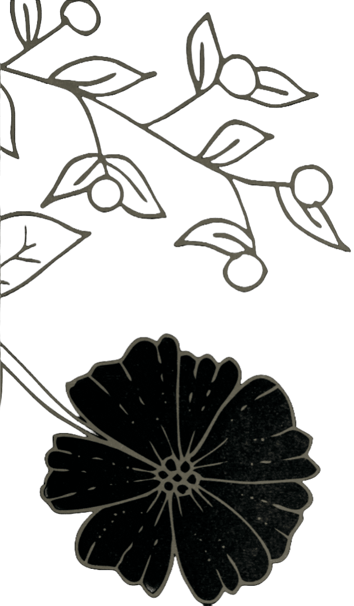
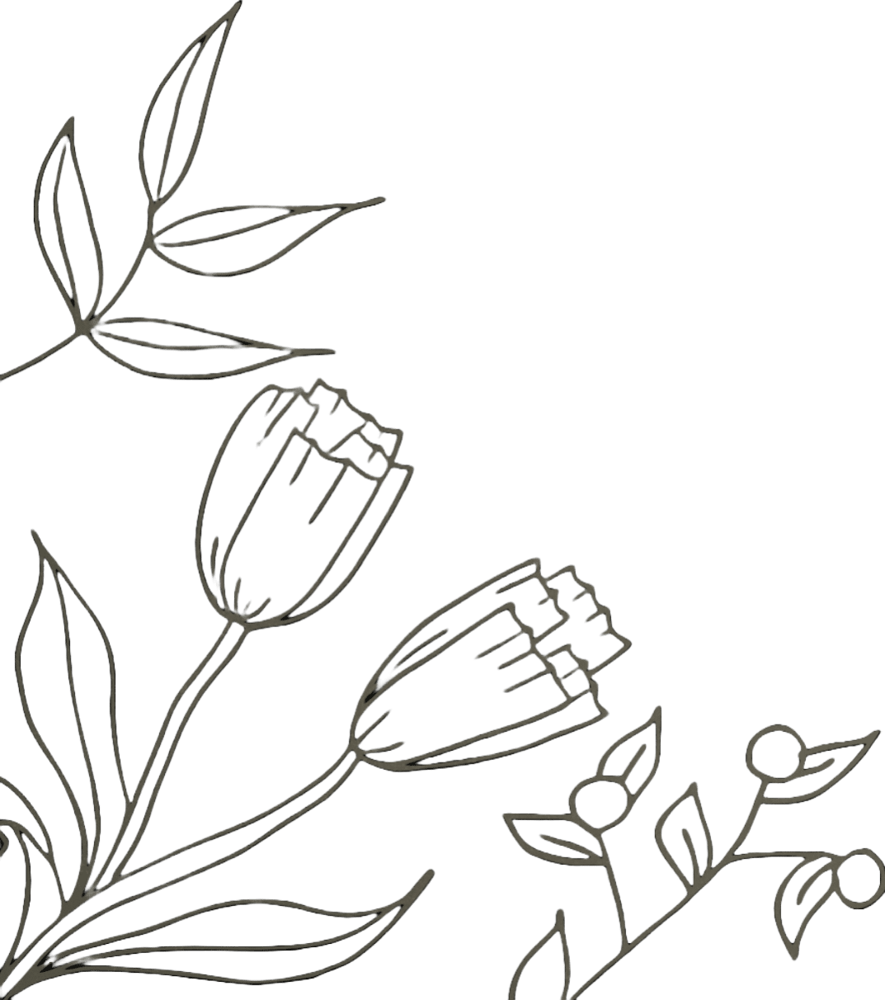
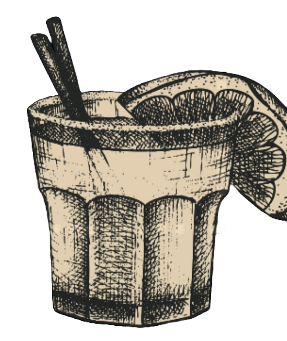
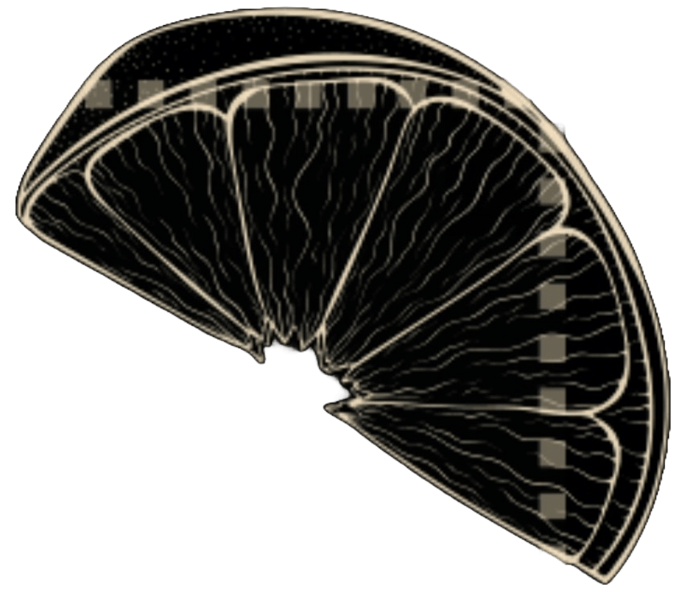

Chevron Right
English
Française
Italiano
English
Française
Italiano
Menu
About
Links
Contect
Drink abbinati ToccaQui
DRINK ABBINATI
Paloma
Frurra e rinfrescante é uno dei cockrail più bevuti in Messico.
Tequila, Lime, Soda al Pompelmo e crusta di Sale
BATANGA
Creato nel 1960 a La Capilla da Javier Delgato Corona
Una semplice ma incredibile combinazione di Tequila, Lime, sale e coca cola. Crusta di sale
MEXIXO Y SPRITZ
Uno Spritz diverso che unische il Mexico alla nostra Puglia.
PassionFruit, Orange Bitter , Aperol, Succo d'arancia Prosecco e Soda.


Appetizers
Bruschetta al Pomodoro
Toasted bread topped with diced tomatoes, garlic, basil, and olive oil
Caprese Salad
Slices of fresh mozzarella cheese, ripe tomatoes, and basil leaves, drizzled with balsamic glaze.
Arancini
Deep-fried risotto balls stuffed with mozzarella cheese, peas, and marinara sauce.
Calamari Fritti
Crispy fried calamari served with marinara sauce and lemon wedges.
Antipasto Platter
A selection of cured meats, cheeses, olives, and marinated vegetables, served with crusty bread.
Toasted bread topped with diced tomatoes, garlic, basil, and olive oil
Caprese Salad
Slices of fresh mozzarella cheese, ripe tomatoes, and basil leaves, drizzled with balsamic glaze.
Arancini
Deep-fried risotto balls stuffed with mozzarella cheese, peas, and marinara sauce.
Calamari Fritti
Crispy fried calamari served with marinara sauce and lemon wedges.
Antipasto Platter
A selection of cured meats, cheeses, olives, and marinated vegetables, served with crusty bread.